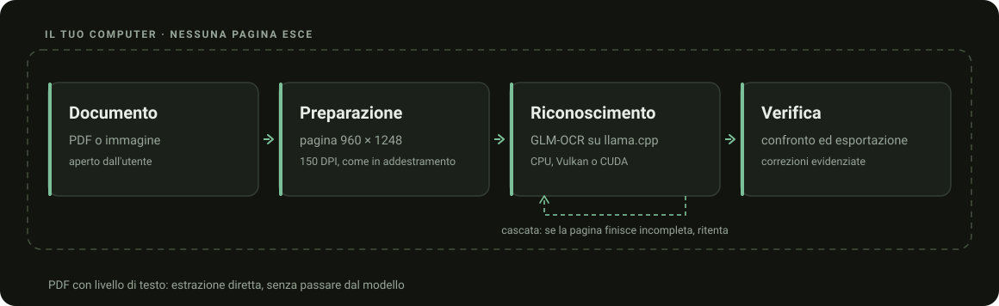
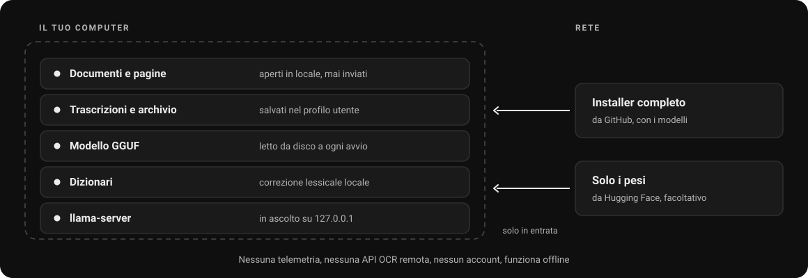

PDF e immagini
PDF, PNG, JPEG, TIFF, BMP, WebP e GIF. Navigazione per pagina e OCR forzabile sui PDF con testo.
Trascrivi le tue pagine, confronta ogni parola ed esporta il risultato. Con un fine-tuning di GLM-OCR, senza caricare i documenti su un servizio cloud.

Il riconoscimento gira sul computer. Nessuna API OCR remota per elaborare le pagine.
Controlla il testo e le correzioni con il documento a fianco, pagina per pagina.
Copia il testo o esportalo in TXT, Markdown e DOCX per continuare il lavoro.
Una finestra per importare, trascrivere e verificare. Il modello lavora dietro le quinte con llama.cpp.
Apri un PDF o trascina un’immagine nell’app.
GLM-OCR legge la pagina. Se il PDF contiene già testo, puoi estrarlo direttamente.
Confronta l’uscita con l’originale e verifica le correzioni evidenziate.
Porta il risultato nel tuo editor, mantenendo una sessione nell’archivio locale.

PDF, PNG, JPEG, TIFF, BMP, WebP e GIF. Navigazione per pagina e OCR forzabile sui PDF con testo.
Un dizionario italiano pubblico aiuta la correzione lessicale. Le sostituzioni restano riconoscibili.
Leggi le formule riconosciute e le tabelle nella trascrizione. Verifica sempre struttura e simboli.
Tema chiaro, scuro o automatico. Archivio locale per ritrovare le sessioni.
Ogni cifra porta con sé l’insieme su cui è stata misurata: una percentuale senza il suo insieme non dice niente.
Benchmark sigillato, 67 pagine leggibili: da 29,3 a 18,8.
Holdout di 164 pagine, con scriventi disgiunti dall’addestramento.
La cascata riconosce una decodifica finita male e ritenta.
Riduzioni relative rispetto al modello base, non una percentuale universale di accuratezza. Il set finale è stato consultato più volte durante lo sviluppo: le misure sono descrittive, non un benchmark indipendente. Metodo, condizioni e limiti nel report tecnico e in BENCHMARKS.md.

Il modello gira anche su CPU con la stessa qualità: cambia il tempo. Sulla macchina di collaudo una pagina passa da poco più di un secondo e mezzo su GPU a una quindicina di secondi su CPU.
Processore, scheda video, driver e complessità della pagina cambiano i valori assoluti: vanno letti come rapporto, non come prestazione garantita. Su CPU il tempo se ne va soprattutto nel codificare l’immagine.
Il motore ascolta solo su 127.0.0.1. Nessuna telemetria, nessun account, nessuna API OCR remota.

Per il passaggio OCR non interviene un responsabile esterno del trattamento, non c’è trasferimento verso paesi terzi e non esiste una copia lato server. È la differenza sostanziale rispetto a un OCR cloud, e riduce il perimetro in modo concreto.
La conformità al GDPR resta in capo al titolare del trattamento: base giuridica, informativa, conservazione, sicurezza del dispositivo e gestione dell’archivio locale, che l’app salva nel profilo utente e che la disinstallazione non rimuove. Dettagli in PRIVACY.md.
L’installer completo contiene già i modelli. Dopo l’installazione l’applicazione funziona offline.
Installer x64 per utente. L’installazione completa comprende app, motore, runtime, dizionari pubblici, licenze e i due modelli GGUF.
Scarica l’installer .exeRichiede WebView2. Circa 2,1 GB installati, oppure 1 GB scegliendo l’installazione senza modelli.
AppImage x86-64: un file solo, eseguibile, che non si installa e non tocca il sistema. Porta con sé applicazione, motore, backend CPU e Vulkan, PDFium e i dizionari pubblici.
Scarica l’AppImageRichiede glibc 2.39 o successiva, GTK 3, WebKitGTK 4.1 e libsoup 3. Circa 36 MB, più 1,3 GB di pesi da scaricare a parte.
Su Linux servono sempre, perché l’AppImage non li contiene: 1,3 GB in più sforerebbero il limite di GitHub per un allegato di release. Su Windows sono facoltativi — l’installer completo li porta già con sé — e si prendono qui se hai scelto l’installazione senza modelli, se usi la cartella portabile o se vuoi tenerli su un altro disco con OCR_ITA_MODELS.
Il dataset rimane privato e non serve per usare l’app.
CPU oppure GPU compatibile con Vulkan o CUDA. Il backend dipende da hardware e driver, e l’applicazione mostra quello in uso. L’AppImage Linux porta CPU e Vulkan: CUDA va compilato sulla macchina che lo userà. Entrambi i pacchetti sono x86-64.
ITA-OCR combina Tauri, Rust e llama.cpp con un fine-tuning di GLM-OCR. Il codice originale è MIT; le dipendenze mantengono le proprie licenze.
Se ITA-OCR ti è stato utile o il progetto ti è piaciuto, puoi lasciare una stella su GitHub: aiuta il progetto a farsi conoscere.
Per scaricare l’installer sì. Dopo, no: l’app esegue il riconoscimento localmente e funziona offline.
No. Il motore può usare Vulkan su GPU compatibili oppure CPU. CUDA è un’opzione per hardware NVIDIA. Le prestazioni dipendono dalla configurazione.
No. Scrittura difficile, formule e impaginazioni complesse possono causare errori. L’interfaccia affianca il risultato all’originale proprio per agevolare la verifica.
No. Il riconoscimento avviene sul computer e il motore ascolta solo sull’indirizzo di loopback. La rete serve a scaricare l’installer, una volta sola.
No. Il dataset resta privato e non è incluso in nessun download. Il codice sta su GitHub e i pesi anche su Hugging Face; il dataset da nessuna parte.
Su Windows no, non con l’installazione completa: i due file GGUF sono già dentro l’installer e l’app li trova da sola al primo avvio. Servono a parte se scegli l’installazione leggera, se usi la cartella portabile o se preferisci tenerli altrove. Su Linux servono sempre: l’AppImage non li contiene, e vanno messi in una cartella models accanto ad essa.
Per Linux sì: un’AppImage x86-64, che non si installa e non tocca il sistema. Richiede glibc 2.39 o successiva e le librerie GTK 3, WebKitGTK 4.1 e libsoup 3 della distribuzione. Per macOS no, e non è pianificata.